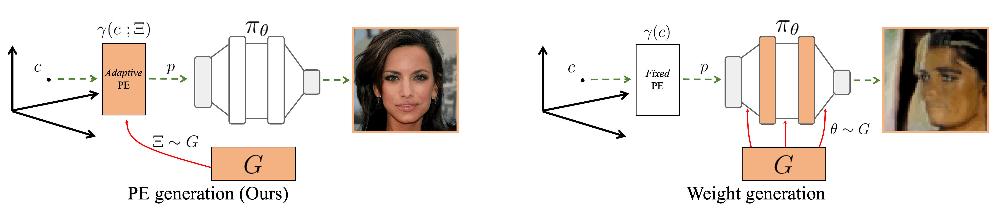
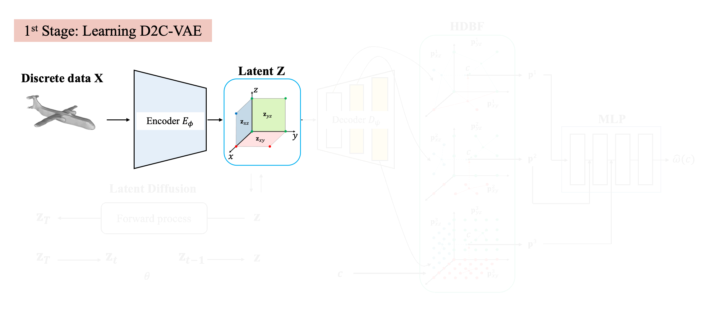

Method Overview
PE generation
To generate Implicit neural representation, we propose generating adaptive positional embeddings instead of the weight of INRs. This shifts the primary expressive power from MLP to PE, which we have observed to lead to more fine-detailed generation results. To further enhance the expressive capacity, we hierarchically decompose the PEs (HDBFs) and modulate the MLPs in a course-to-fine manner (CFC).
Two-stage training
In the first stage, we learn the latent space of continuous signals via our D2C-VAE framework. Then, we approximate the distribution of latent space with the latent diffusion model (DDMI). After training, DDMI generate hierarchically decomposed positional embeddings (HDBFs), where the MLPs read out HDBFs into the signal values.
